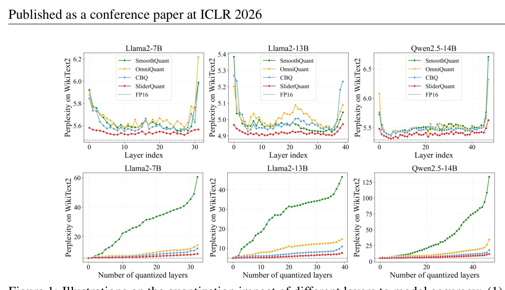
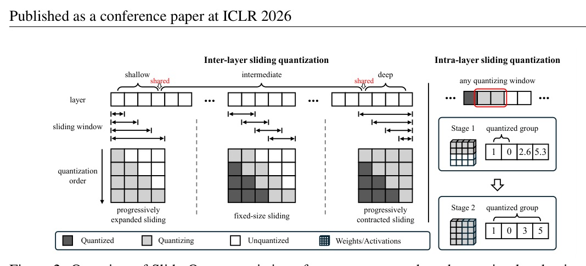

SliderQuant 的要點不是發明一個新 quantizer，而是把 量化窗口怎麼滑 變成模型深度敏感：淺層逐步擴張、深層逐步收縮、中間固定滑動，再用 intra-layer sliding 做增量共同量化。


Shallow / first layer
Intermediate
Deep / last layer
Default
| Model / metric | CBQ | SliderQuant |
|---|---|---|
| Llama2-7B Wiki | 12.73 | 8.34 |
| Llama2-7B C4 | 14.45 | 11.10 |
| Qwen2.5-14B Wiki | 18.20 | 11.00 |
| Qwen2.5-14B C4 | 27.96 | 16.60 |
| Llama2-13B W4A4 | OmniQuant | CBQ | SliderQuant |
|---|---|---|---|
| PIQA | 69.21 | 71.00 | 71.65 |
| ARC-e | 57.37 | 61.57 | 62.88 |
| ARC-c | 34.56 | 35.84 | 37.80 |
| Avg | 52.71 | 54.67 | 56.77 |
| Qwen3-30B-A3B | OmniQuant | SliderQuant |
|---|---|---|
| W4A16 Avg | 74.08 | 75.00 |
| W3A16 Avg | 73.01 | 74.48 |
| W2A16 Avg | 53.31 | 61.15 |
| W4A4 Avg | 50.11 | 66.86 |
| Model / Avg pass@1 | FP16 | OmniQuant W4A16 | SliderQuant W4A16 |
|---|---|---|---|
| R1-Distill-Qwen-14B | 78.82 | 71.41 | 77.77 |
| R1-Distill-Qwen-32B | 83.17 | 76.58 | 82.71 |
SliderQuant 的勝點在 把 overlap 與 optimization frequency 分配給真正敏感的 depth。
| gamma / stages | W4A4 Wiki | W4A4 C4 | W2A16 Wiki | W2A16 C4 |
|---|---|---|---|---|
| 1.0 / N=1 | 12.73 | 14.45 | 12.10 | 18.91 |
| 0.5 / N=2 | 10.34 | 13.46 | 10.71 | 16.10 |
| 0.33 / N=3 | 10.56 | 13.30 | 10.67 | 15.87 |
| 0.25 / N=4 | 11.32 | 14.10 | 10.83 | 16.45 |
| Method | s | Ls&Ld | W4A4 Wiki | W4A4 C4 |
|---|---|---|---|---|
| Fixed baseline | 2 | - | 12.73 | 14.45 |
| Fixed baseline | 3 | - | 11.18 | 13.94 |
| Fixed baseline | 4 | - | 11.13 | 13.52 |
| Inter-S | 2 | 4 | 9.13 | 11.78 |
| Llama2-13B W4A4 | WikiText2 | C4 | Avg QA |
|---|---|---|---|
| FlatQuant | 5.12 | 7.09 | 70.38 |
| SliderQuant+ | 5.07 | 7.04 | 71.22 |
“intermediate layers usually have smaller quantization impacts on model accuracy compared to shallow/deep layers… the first/last layer has the largest quantization impact…”
中間層相對好量化，淺層/深層較敏感，而第一層與最後一層最敏感。§1 p.2 lines 86-98
“With PESW, the first layer is always involved in the quantization process with every expanded sliding window…”
PESW 讓第一層反覆參與逐步擴張的窗口，替淺層建立由局部到全域的量化協同。§3.2 p.5 lines 280-287
“In the first stage, the first half of weight/activation matrices… In the second stage, the whole… matrices… are quantized jointly.”
intra-layer sliding 用兩階段（預設）把每個 window 內的權重/activation 從半量到全量共同量化。§3.2 p.5 lines 307-314
“Under the W4A16 setting, SliderQuant remains near-lossless relative to FP16 on both 14B and 32B models…”
在 DeepSeek-R1 distilled 14B/32B 上，W4A16 幾乎貼近 FP16，這比只看 perplexity 更能說明推理能力保存。§4.1 p.8 lines 1357-1362
量化不只是 bit-width 選擇，也是 校準與重建的路徑設計。SliderQuant 的價值，是把 layer sensitivity 轉成一個可實作的 sliding schedule。